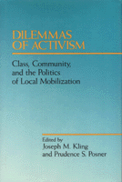

<body bgcolor="#FFFFFF" text="#000000" link="#0000FF" vlink="#CC0000" alink="#CC0000"><center><hr width="350" size="1" align="center" noshade>Focusing on three dilemmas that inherently shape the issues and strategies around which people mobilize<hr width="350" size="1" align="center" noshade><p><a href="https://cdcshoppingcart.uchicago.edu/Cart/ChicagoBook.aspx?ISBN=9780877226963&&PRESS=temple" target="_top">Buy this book!</a> | <a href="https://cdcshoppingcart.uchicago.edu/Cart/Cart.aspx?PRESS=temple" target="_top">View Cart</a> | <a href="https://cdcshoppingcart.uchicago.edu/Cart/Cart.aspx?PRESS=temple" target="_top">Check Out</a></p><p></p></center><!--none//--><h1>Dilemmas of Activism</h1>
<H2>Class, Community, and the Politics of Local Mobilization</H2>
<h3>edited by Joseph M. Kling and Prudence S. Posner</h3>
<P>cloth 0-87722-696-2 $39.95, Jun 90, <FONT COLOR=#990033>Out of Print</FONT>
<BR> 384 pp
</P><p>Through the 1980s, collective resistance to conditions of economic deprivation, social insecurity, and political control have become more parochial, fragmented, and reactive, rather than transformational. In order to challenge these trends activists need to sort through the understanding and practice they bring to their work in communities and organizations. The essays in <I>Dilemmas of Activism</I> contribute to that reexamination. Focusing on three dilemmas that inherently shape the issues and strategies around which people mobilize, the contributors look at the ways in which both class and community create frameworks for activism at the local level.
<BR>&nbsp;<h2>Contents</h2><P>
<p>Preface
<br>Introduction &#150 Prudence S. Posner
<p><b>Part I: Figuring It Out: Theoretical Frameworks for Activism</b>
<ul><p>Class and Community in an Era of Urban Transformation &#150 Joseph M. Kling and Prudence S. Posner
<br>The American Working Class and the Community-Workplace Dichotomy: Selections from the Writings of Ira Katznelson &#150 edited by Prudence S. Posner
<br>Ideology and Activism: Two Approaches to "Leading the People" &#150 Robert Fisher and Joseph M. Kling
<br>Family and Class in Contemporary America: Notes toward an Understanding of Ideology &#150 Rayna Rapp
<br>The Politics of Black Empowerment in Urban America: Reflections on Race, Class, and Community &#150 James Jennings</ul>
<p><b>Part II: Where the Action Is: Issues and Community Activism</b>
<ul><p>New Wine in Old Bottles: Southern Populism and the Dilemmas of Class, Ideology, and State Power &#150 Bruce Palmer
<br>The Perils of Petty Production: The Agricultural Crisis &#150 Rona Weiss
<br>Two Roads Left: Strategies of Resistance to Plant Closings in the Monongahela Valley &#150 Sidney Plotkin and William E. Scheuerman
<br>Enclave Consciousness and Neighborhood Activism &#150 Sidney Plotkin
<br>The Agony and the Equity: Strategies for Building Low-Income Housing &#150 Tony Schuman
<br>Changing the Conversation: Reconstructing Public Discourse about Education &#150 Svi Shapiro
<br>Working Class Women, Social Protest, and Changing Ideologies &#150 Ida Susser
<br>Transformative Populism and the Development of a Community of Color &#150 Marie Kennedy and Chris Tilly with Mauricio Gaston</ul>
</P><BR>&nbsp;<H2>About the Author(s)</H2>
<P><b>Joseph M. Kling</b> is Assistant Professor in the Department of Government at St. Lawrence University.</P>
<P><b>Prudence S. Posner</b>, formerly Director or Research and Publication at the United Community Centers in Brooklyn, is now Director of the Liberty Partnership Program of the Associated Colleges of the St. Lawrence Valley.</P>
<BR><H2>Subject Categories</H2>
<p><A HREF="/tempress/political.html" TARGET="_top">Political Science and Public Policy</a>
<BR><A HREF="/tempress/sociology.html" TARGET="_top">Sociology</a>
</p>
<p align="center"><a href="https://cdcshoppingcart.uchicago.edu/Cart/ChicagoBook.aspx?ISBN=9780877226963&&PRESS=temple" target="_top">Buy this book!</a> | <a href="https://cdcshoppingcart.uchicago.edu/Cart/Cart.aspx?PRESS=temple" target="_top">View Cart</a> | <a href="https://cdcshoppingcart.uchicago.edu/Cart/Cart.aspx?PRESS=temple" target="_top">Check Out</a></p><p><font face="Arial" size="1"><a href="copyright.html" onMouseOver="window.status='Web Copyright Policy';return true;" onMouseOut="window.status=''" title="Web Copyright Policy">&copy;</a> 2015 <a href="http://www.temple.edu" target="new" onMouseOver="window.status='Link to Temple University home page';return true;" onMouseOut="window.status=''" title="Link to Temple University home page">Temple University</a>. All Rights Reserved. http://www.temple.edu/tempress/titles/655_reg.html</font></p>